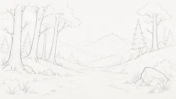

Nature Seed مسیری بکشید. آنها را به هم برسانید.
یک پازل فیزیکی رایگان که با کشیدن خط حل میشود و میتوانید آن را در مرورگر خود بازی کنید. با جوهر محدود یک خط بکشید تا به سطح شیبدار، پل یا نقطهی دریافت تبدیل شود و Water Drop را به Seed برساند. هر مرحلهی حلشده یک صحنهی جنگل آبرنگ را بازسازی میکند.
در 18 سپتامبر 2026 با 100 مرحله، ستارههای بهینگی خط و پیشرفت ذخیرهشده منتشر شد. در itch.io، Game Jolt و indiexpo رایگان است؛ نسخهی iOS و Android هدف ماست و هنوز در فروشگاههای برنامه نیست.
بکشیدبا جوهر محدود بکشید
اتصالWater Drop را به Seed بیاورید
شکوفاییجنگل را برگردانید
درون نسخهی فعلی
چیزی که میکشید بخشی از مرحله میشود.
هر خطی که نهایی میکنید به یک جسم جامد با برخوردهای واقعی تبدیل میشود و Water Drop و Seed به آن واکنش نشان میدهند. جوهر و تعداد خطها هر دو محدودند، پس شکل خط اهمیت دارد.
وضعیت انتشار منتشر شده در 18 سپتامبر 2026

نمای کلی بازی
یک پازل آرامشبخش که با کشیدن خط حل میشود و هدفش رساندن دو شخصیت کوچک به هم است.
ایده
مسیری بکشید، Water Drop و Seed را به هم برسانید و تماشا کنید طرح آرام دوباره جان بگیرد.
اجرای نسخه
100 مرحلهی قابل بازی با کشیدن لمسی، ستاره برای بهینگی خط و پیشرفتی که بین جلسهها ذخیره میشود.
مخاطب
بازیکنانی که پازلهای آرام، فیزیک سبک، تمهای طبیعت و جلسههای موبایلی بدون استرس را دوست دارند.
وضعیت
در 18 سپتامبر 2026 منتشر شد و رایگان در مرورگر شما قابل بازی است. نسخهی موبایل هدف ماست و هنوز در فروشگاههای برنامه نیست.
ویژگیها
در Nature Seed چه میکنید.
مسیرهای فیزیکی با کشیدن خط
هر پازل با زمین، Seed و Water Drop شروع میشود. خطی که بازیکن میکشد به سطح شیبدار، پل یا نقطهی دریافتی تبدیل میشود که آن دو را به هم میرساند.
بازخورد فیزیکی روشن
Water Drop و Seed طوری حرکت میکنند که بتوانید دنبالشان کنید، پس یک تلاش ناموفق نشان میدهد چه چیزی را باید عوض کنید.
پاداشهای بازسازی جنگل
یک مرحله را تمام کنید تا صحنهی طراحیشده پر از رنگ و درختانِ در حال رشد شود.
مرحلههای کوتاه، کشیدن با لمس
مرحلهها کوتاهاند و با لمس میکشید، که برای جلسههای سریع روی گوشی مناسب است.
حلقه بازی
نحوهی بازی Nature Seed
- مرحله 01طرح را بخوانید
دنبال شیبها، شکافها و مانعها بگردید و امنترین راه را برای رساندن دو شخصیت به هم پیدا کنید.
- مرحله 02خط را بکشید
خط خود را بکشید. این خط به سطح شیبدار، راهنما یا نقطهی دریافت برای شخصیتها تبدیل میشود.
- مرحله 03ثبت کنید و تماشا کنید
خط را نهایی کنید و واکنش شخصیتها را تماشا کنید. میبینید چه چیزی جواب داد و چه چیزی نه.
- مرحله 04شکوفا کنید یا بهبود دهید
اگر Water Drop به Seed برسد، جنگل برمیگردد. اگر به هم نرسیدند، با چیزی که همین حالا یاد گرفتید دوباره بکشید.
داستان / جهان
یک جنگل طراحیشده منتظر آب است.
Nature Seed بهعنوان یک پازل فیزیکی با کشیدن خط شروع شد که دربارهی احیای چیزی شکننده بود، نه هل دادن اشیا به سمت هم.
بازیگران Seed و Water Drop و جنگلی هستند که هنگام بازی از طرح به رنگ برمیگردد. هر پازل یک کار کوچک است: زمین را بررسی کنید، مسیری بکشید و به آب کمک کنید به چیزی برسد که میتواند رشد کند.
- جهت طراحی
- فیزیک آرام و بازسازی قابل مشاهده
- شخصیتها
- Water Drop و Seed
- تعامل
- کشیدن با لمس
- پاداش تسلط
- حل با یک خط، سه ستاره به همراه دارد
یک نگاه
امروز رایگان در مرورگر، با موبایل بهعنوان هدف.
جوهر و تعداد خطهای شما محدود است. با آنها Water Drop را به Seed برسانید، سپس مرحله را دوباره بازی کنید و راهحلتان را به یک خط برسانید تا سه ستاره بگیرید.
- ژانر
- پازل فیزیکی با کشیدن خط
- پلتفرم هدف
- iOS / Android
- شکل جلسه
- مرحلههای کوتاه و آرام
مواد را دانلود کنید
مواد مطبوعاتی و ویژه سازندگان محتوای Nature Seed
پیشنمایشهای WebP برای پوشش مطبوعاتی، بررسی ناشران و ارجاع به صفحهی فروشگاه. فایلهای مبدأ با وضوح کامل در صورت درخواست در دسترساند.
برند و شخصیتها
 Water Dropشخصیت آبی که باید به Seed برسد.
Water Dropشخصیت آبی که باید به Seed برسد.
 کاراکتر Seedشخصیت سبزی که Water Drop میخواهد به آن برسد.
کاراکتر Seedشخصیت سبزی که Water Drop میخواهد به آن برسد.
 رشد درختدرختی که پس از حل رشد میکند.
رشد درختدرختی که پس از حل رشد میکند.
 منوی جنگلپسزمینهی منوی اصلی.
منوی جنگلپسزمینهی منوی اصلی.
 پس زمینه بازیپسزمینهی مرحله با محوطهی بازی خالی.
پس زمینه بازیپسزمینهی مرحله با محوطهی بازی خالی.
مرحلههای طرح اولیه با کشیدن خط
 طرح مرحله 01طرح پیش از حل.
طرح مرحله 01طرح پیش از حل.
 طرح مرحله 02طرح پیش از حل.
طرح مرحله 02طرح پیش از حل.
 طرح مرحله 03طرح پیش از حل.
طرح مرحله 03طرح پیش از حل.
 طرح مرحله 04طرح پیش از حل.
طرح مرحله 04طرح پیش از حل.
 طرح مرحله 05طرح پیش از حل.
طرح مرحله 05طرح پیش از حل.


طرح مرحله 06طرح پیش از حل. طرح مرحله 07طرح پیش از حل.
طرح مرحله 07طرح پیش از حل.
 طرح مرحله 08طرح پیش از حل.
طرح مرحله 08طرح پیش از حل.
 طرح مرحله 09طرح پیش از حل.
طرح مرحله 09طرح پیش از حل.
 طرح مرحله 10طرح پیش از حل.
طرح مرحله 10طرح پیش از حل.
صحنههای پازل بازسازیشده
 مرحله 01 بازسازی شدپس از حل بازسازی میشود.
مرحله 01 بازسازی شدپس از حل بازسازی میشود.
 مرحله 02 بازسازی شدپس از حل بازسازی میشود.
مرحله 02 بازسازی شدپس از حل بازسازی میشود.
 مرحله 03 بازسازی شدپس از حل بازسازی میشود.
مرحله 03 بازسازی شدپس از حل بازسازی میشود.
 مرحله 04 بازسازی شدپس از حل بازسازی میشود.
مرحله 04 بازسازی شدپس از حل بازسازی میشود.
 مرحله 05 بازسازی شدپس از حل بازسازی میشود.
مرحله 05 بازسازی شدپس از حل بازسازی میشود.
 مرحله 06 بازسازی شدپس از حل بازسازی میشود.
مرحله 06 بازسازی شدپس از حل بازسازی میشود.
 مرحله 07 بازسازی شدپس از حل بازسازی میشود.
مرحله 07 بازسازی شدپس از حل بازسازی میشود.
 مرحله 08 بازسازی شدپس از حل بازسازی میشود.
مرحله 08 بازسازی شدپس از حل بازسازی میشود.
 مرحله 09 بازسازی شدپس از حل بازسازی میشود.
مرحله 09 بازسازی شدپس از حل بازسازی میشود.
 مرحله 10 بازسازی شدپس از حل بازسازی میشود.
مرحله 10 بازسازی شدپس از حل بازسازی میشود.
خط زمانی توسعه
خط زمانی توسعهی Nature Seed
- تابستان 2025مفهوم اصلی
Nature Seed با ایدهی یک پازل آرام موبایل دربارهی پیوند و احیای طبیعت شروع شد.
- اکتبر 2025هویت Seed و Water Drop
سند طراحی را تمام کردیم و Seed و Water Drop را بهعنوان شخصیتهای اصلی انتخاب کردیم.
- دسامبر 2025آغاز توسعه
مرحلههای اول را روی کاغذ طراحی کردیم، بعد ساختن را شروع کردیم و سیستمهای اصلی قابل بازی شدند.
- فوریه 2026دور بزرگ پیشنویس مرحلهها
یک دور بزرگ و خام روی مرحلهها پایهای برای صیقلکاری و بالانسکردن بعدی به ما داد.
- مارس-آوریل 2026بررسی مکانیک و مرحلهها
مکانیکهای اضافه و مرحلههای پیشنویس را بازبینی کردیم، سپس آنها را ساده یا بازسازی کردیم تا بازی آرام بماند.
- جولای 2026بازنگری نمونهی اولیهی عمودی
نسخهی جولای کشیدن با جوهر محدود، ستارههای بهینگی، پیشرفت ذخیرهشده و تولید پایدار خط را در یک حلقهی بازی قابلبازی گرد هم آورد.
- 18 سپتامبر 2026انتشار Nature Seed
بازی با نام Nature Seed و با 100 مرحله، ستارههای بهینگی خط، پیشرفت ذخیرهشده و صحنههای بازسازی آبرنگ منتشر شد.
پرسشهای متداول Nature Seed
پرسشهای متداول دربارهی Nature Seed
آیا Nature Seed رایگان است؟
بله. میتوانید آن را رایگان در مرورگر خود در itch.io، Game Jolt و indiexpo بازی کنید.
آیا Nature Seed منتشر شده است؟
بله. در 18 سپتامبر 2026 با 100 مرحله منتشر شد. نسخهی iOS و Android پلتفرم هدف است و هنوز در فروشگاههای برنامه نیست.
Nature Seed چه نوع بازیای است؟
یک پازل فیزیکی آرامشبخش که با کشیدن خط حل میشود. خطهایی که میکشید به اجسام جامد تبدیل میشوند و به دیدار Water Drop و Seed کمک میکنند.
Nature Seed را چطور بازی کنیم؟
زمین را بخوانید، با جوهر محدودتان مسیری بکشید و واکنش هر دو شخصیت را تماشا کنید. اگر به هم نرسیدند، دوباره بکشید. خط کمتر، ستارهی بیشتر؛ یک خط سه ستاره میدهد.
سازندهی Nature Seed کیست؟
WillowinWorlds، یک استودیوی مستقل که بازیهای پازل و آرکید موبایل میسازد.
آیا میتوانم از مواد مطبوعاتی Nature Seed استفاده کنم؟
بله، برای مطبوعات، بررسی ناشران و ارجاع در فروشگاه. فایلهای مبدأ خصوصی میمانند، مگر اینکه از ما بخواهید.
Nature Seed Devlog
چه چیزی تغییر کرد و کی
- انتشار Nature Seed
Nature Seed با عنوان نهایی خود بهعنوان یک بازی رایگان مرورگری در itch.io، Game Jolt و indiexpo منتشر شد، با 100 مرحله، ستارههای بهینگی خط و پیشرفت ذخیرهشده.
- بازسازی و بازبینی پایداری مرحلهی 2
مرحلهی 2 اکنون از جفت پسزمینهی تولیدی خود همراه با چیدمان مرحلهی پایدارتر، بررسیهای برخورد و بازخورد تکمیل استفاده میکند.
- جولای 2026نسخهی قابل بازی
نسخهی جولای کشیدن خط با جوهر محدود، ستارههای بهینگی، پیشرفت ذخیرهشده و بازخورد بازسازی را کنار هم آورد.
- آوریل 2026بازنگری و بازطراحی مرحله
پس از یک بازبینی داخلی چند مرحلهی پیشنویس را بازسازی کردیم تا پیچیدگی کمتر شود و خواندنشان روی گوشی راحتتر باشد.
- مارس 2026بررسی مکانیک
مکانیکهای اضافه را آزمودیم و آنهایی را که مرحلهها را شلوغ نشان میدادند حذف کردیم.
- فوریه 2026دور بزرگ پیشنویس مرحلهها
یک دور بزرگ و خام روی مرحلهها، پایهی صیقلکاری و بالانسکردن بعدی شد.
- دسامبر 2025آغاز توسعه
سیستمهای اصلی از سند طراحی به شکل قابل بازی درآمدند.
- تابستان 2025مفهوم اصلی
نخستین نسخهی Nature Seed ایدهی یک پازل آرام دربارهی پیوند و احیای طبیعت بود.